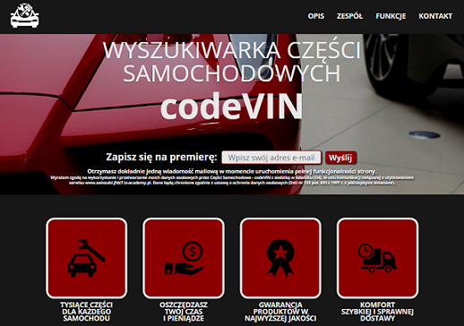
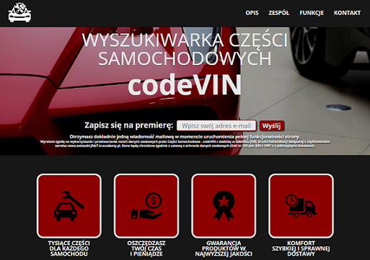

Projekty
Portfolio
Strona prezentująca moje dokonania w dziedzinie web developmentu.

Części samochodowe
Aplikacja codeVIN służy do szybkiego i łatwego wyszukiwania części zamiennych do samochodu.
Junior Frontend Developer
Strona prezentująca moje dokonania w dziedzinie web developmentu.
Aplikacja codeVIN służy do szybkiego i łatwego wyszukiwania części zamiennych do samochodu.



Mieszkam w Gdańsku, ale pochodzę z podkarpacia. Z wykształcenia jestem filozofem i magistrem ochrony środowiska, a na co dzień pracuję w korporacji. Jestem uzależniona od czekolady, uwielbiam filmy i komiksy. Nie lubię zimy, diet i zatłoczonych SKMek. Przygodę z HTML, CSS i JavaSript rozpoczęłam z kursem infoShare Academy. Obecnie cały wolny czas poświęcam na doskonaleniu umiejętności potrzebnych do stworzenia efektywnej i nowoczesnej aplikacji webowej.